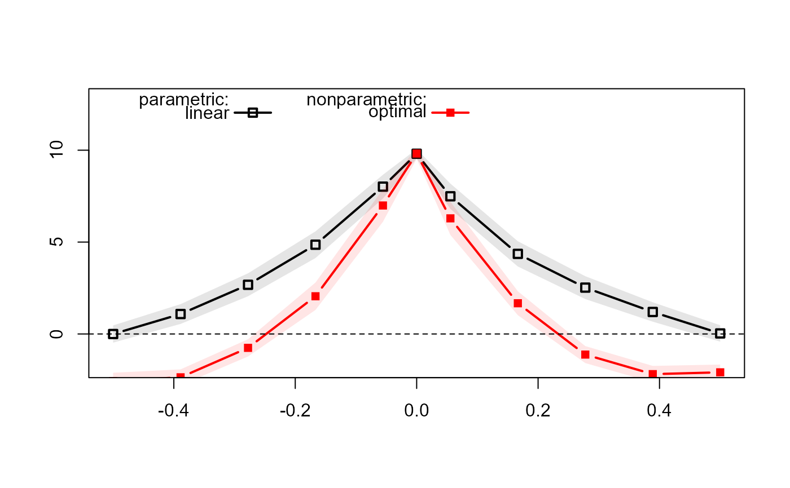

Plot the Simulated Estimates for Sensitivity Analyses
sens_plot.Rdsens_plot plots the sensitivity analysis for cutpoints or bandwidths.
Arguments
- sim_results
A
data.framereturned byrd_sens_cutoff,rd_sens_bw,mrd_sens_cutoff, ormrd_sens_bw.- level
A numeric value between 0 and 1 specifying the confidence level for CIs (assuming a normal sampling distribution). The default is 0.95.
- x
A string of the column name of the varying parameter in
sim_results. This will be used as the x-axis in the plot. Possible values arec("A1", "A2", "bw"), which are column names insim_results.A1specifies that the varying cutoffs are for assignment 1 andA2specifies assignment 2.bwindicates that the varying parameter is bandwidth.- plot_models
A character vector specifying the models to be plotted (i.e. models estimated with different approaches). Possible values are
unique(sim_results$model)).- yrange
An optional numeric vector specifying the range of the y-axis.
Examples
set.seed(12345)
x <- runif(1000, -1, 1)
cov <- rnorm(1000)
y <- 3 + 2 * x + 3 * cov + 10 * (x >= 0) + rnorm(1000)
m <- rd_est(y ~ x | cov, t.design = "geq")
sim_cutoff <- rd_sens_cutoff(m, seq(-.5, .5, length.out = 10))
sens_plot(sim_cutoff, x = "A1", plot_models = c("linear", "optimal"))

sim_bw <- rd_sens_bw(m, seq(.1, 1, length.out = 10))
sens_plot(sim_bw, x = "bw")